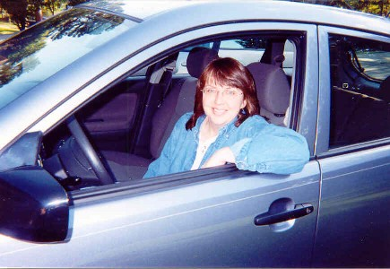

‚Üê Back to MarckBeggs.com | Arkansas Literary Forum archive, preserved as originally published‚Üê Back to MarckBeggs.com | Arkansas Literary Forum archive, preserved as originally published
‚Üê Back to MarckBeggs.com | Arkansas Literary Forum archive, preserved as originally published‚Üê Back to MarckBeggs.com | Arkansas Literary Forum archive, preserved as originally published|

Laura Lynn
Brown grew up in Ohio. She earned her
B.A. in English and journalism at Harding University in Searcy,
Ark., and her M.F.A. in nonfiction at the University of Pittsburgh.
She has taught composition and journalism and currently is a copy
editor and occasional writer at the Arkansas Democrat-Gazette, where
her headline writing has won state and national awards. She once
won first place in the Pittsburgh Harvest Fair for growing the best
cherry tomatoes. She lives in Arkansas and drives a Cosmic Blue
Toyota Matrix.
|